Abstract
Visual document retrieval has become essential for accessing information in visually rich documents. Existing approaches fall into two camps. Late-interaction retrievers achieve strong quality through fine-grained token-level matching but store hundreds of vectors per page, incurring large index footprints and high serving costs. By contrast, dense single-vector retrievers retain storage and latency advantages but consistently lag in quality because they compress all information into a single final-layer embedding. In this work, we first conduct a layerwise diagnostic on single-vector retrievers, revealing that retrieval-relevant signal resides in internal representations. Motivated by these findings, we propose MINER (Mining Multimodal Internal RepreseNtation for Efficient Retrieval), a lightweight plug-in module that probes and fuses internal signals across transformer layers into a single compact embedding without modifying the backbone or sacrificing single-vector efficiency. The first Retrieval-Aligned Layer Probing stage attaches a lightweight probe at each layer, surfacing which dimensions carry retrieval-relevant information. The subsequent Adaptive Sparse Multi-Layer Fusion stage applies performance-adaptive neuron-level masking to the selected layers and fuses the surviving signals into the final dense vector. Across ViDoRe V/V/V, MINER outperforms existing dense single-vector retrievers on the majority of benchmarks, with up to 4.5% nDCG@ improvement over its corresponding backbone. Compared to strong late-interaction baselines, in some settings MINER substantially narrows the nDCG@ gap to while preserving the storage and serving advantages of dense retrieval.
1 Introduction
Visually rich documents such as presentation slides, scanned reports, and scientific posters convey information through a tightly coupled combination of text, layout, and figures (Ding et al., 2026). Accessing information in such documents requires retrieval systems that can jointly reason over visual and textual cues (Gao et al., 2025; Ma et al., 2024). This need has driven growing interest in visual document retrieval, where the goal is to retrieve relevant document pages directly from their rendered images, bypassing the fragile OCR-and-chunking pipelines that traditional text-based retrieval systems depend on (Faysse et al., 2025; Yu et al., 2025).
Existing visual document retrieval methods largely fall into two families. Late-interaction retrievers, originating from ColBERT (Khattab and Zaharia, 2020) and extended to the multimodal setting by ColPali (Faysse et al., 2025), represent each query and document as a set of token-level embeddings and compute relevance through fine-grained matching. This preserves rich local signals and yields strong retrieval quality, but at a substantial cost: each document page may require storing over a thousand patch-level vectors, leading to large index footprints and expensive scoring at retrieval time (Ma et al., 2025; Santhanam et al., 2022). Dense single-vector retrievers take the opposite approach, compressing each input into a single embedding and scoring by a simple dot product (Karpukhin et al., 2020; Lin et al., 2025; Günther et al., 2025). This yields compact indices and efficient serving, but the compression into one final-layer vector creates an information bottleneck: retrieval-relevant signals presented in intermediate representations may be discarded before reaching the output embedding.
A growing body of recent work suggests that the internal representations of deep networks carry richer task-relevant information than their final outputs alone (Evci et al., 2022; Tu et al., 2023; Zhang et al., 2024). In natural language processing, SPIN (Jiao et al., 2024) and SIREN (Jiao et al., 2026) have demonstrated that intermediate layers encode semantically useful information that benefits downstream tasks such as text classification. For vision tasks, Perception Encoder (Bolya et al., 2025) shows that the strongest visual embeddings often emerge before the last layer rather than at the network output. These findings raise a natural question for multimodal retrieval:
To answer this question, we first conduct a systematic layerwise analysis of single-vector retrievers. Using normalized Centered Kernel Alignment (CKA) (Kornblith et al., 2019) and a novel alignment-ratio diagnostic, we reveal that retrieval-relevant signal does reside in internal representations, but is distributed unevenly across depths. Earlier layers contain useful but misaligned structure, while later layers are progressively more aligned with the final retrieval space. This analysis yields a principled criterion for selecting and partitioning the layers that are most amenable to lightweight extraction.
Motivated by these findings, we propose MINER (Mining Multimodal Internal RepreseNtation for Efficient Retrieval), a lightweight plug-in module that enhances dense retrieval embeddings by selectively extracting and fusing retrieval-relevant signals from internal layers. MINER operates in two stages. The first stage, Retrieval-Aligned Layer Probing, attaches a lightweight shared probe at each selected layer and trains it to align per-layer text and vision readouts to their cross-modal final-layer anchors. Guided by the principled criterion we derived from our layerwise analysis, we select layers that contain richer retrieval-relevant signals and partition them into two sets. Layers in the structurally directly aligned regime are probed with simple element-wise reweighting, which is referred to as Base Probing. In contrast, layers in the structurally less aligned regime receive a more expressive row-normalized linear projection, termed Normalized Projection Probing. The second stage, Adaptive Sparse Multi-Layer Fusion, applies performance-adaptive neuron-level masking to the probed layers and aggregates the surviving signals into a single dense embedding through a learned cross-layer weighted sum with a global bias. Importantly, without modifying the backbone model, MINER is agnostic to the readout mechanism (EOS-token or pooling) and preserves the storage and serving efficiency of single-vector retrievers. Across ViDoRe V/V/V (Faysse et al., 2025; Macé et al., 2025; Loison et al., 2026), MINER consistently outperforms existing dense single-vector retrievers and, in several settings, substantially narrows the gap to strong late-interaction baselines.
In summary, our contributions are as follows:
- 1.
We reveal that retrieval-relevant signal in single-vector retrievers is distributed unevenly across transformer layers, and that different layers require qualitatively different extraction strategies. We introduce normalized CKA and alignment ratio as principled diagnostic tools.
- 2.
We propose MINER, a plug-in module guided by the layerwise diagnostic, comprising Retrieval-Aligned Layer Probing and Adaptive Sparse Multi-Layer Fusion, which improves retrieval quality without modifying the backbone or increasing storage and serving cost.
- 3.
MINER consistently improves dense retrieval quality across multiple backbones and the suite of ViDoRe benchmarks, achieving up to % nDCG@ gain over the dense baseline, while matching its storage footprint and incurring only query latency overhead, substantially narrowing the gap to late-interaction methods at lower index cost.
2 Related Work
We review two lines of work most relevant to MINER: visual document retrieval methods and studies on internal representations for retrieval.
Visual document retrieval has increasingly moved away from OCR-then-chunking pipelines toward direct page-image retrieval. There are two main camps for existing methods. (1) Late-interaction retrievers, originating from ColBERT (Khattab and Zaharia, 2020), have been especially influential in this transition, with ColPali (Faysse et al., 2025) demonstrating strong retrieval performance on visually rich documents using VLM-based multi-vector representations. This line has been further developed through more realistic and challenging benchmarks such as ViDoRe V and ViDoRe V (Macé et al., 2025; Loison et al., 2026; Dong et al., 2025; Chen et al., 2025b), as well as follow-up studies on reproducibility and storage efficiency (Qiao et al., 2025; Ma et al., 2025). In parallel, (2) single-vector retrievers (Karpukhin et al., 2020) remains attractive because of its compact indexing and efficient serving. FLMR (Lin et al., 2023) explores fine-grained multimodal retrieval for retrieval-augmented visual question answering (VQA), and MM-Embed (Lin et al., 2025) studies universal multimodal retrieval with multimodal LLMs. On the model side, Jina-embeddings-v (Günther et al., 2025) and Eager-Embed-v (Balarini, 2025) represent recent dense multimodal embedding systems designed for practical retrieval. Compared with late interaction, these single-vector methods preserve the efficiency advantages of indexing and serving, but they typically lag in retrieval quality.
Recent works suggest that useful signals are often distributed across intermediate layers rather than concentrated only in the final output. Perception Encoder (Bolya et al., 2025) shows that strong visual embeddings may emerge before the final network output, while recent dense retrieval work demonstrates that multi-layer representations can improve retrieval quality beyond standard last-layer pooling (Xie and Lukasiewicz, 2025). SPIN (Jiao et al., 2024) and SIREN (Jiao et al., 2026) further show that probing techniques for sparse selection and integration of internal neurons can improve downstream task performance.
Overall, prior works have improved multimodal retrieval either by increasing matching granularity through late interaction or by training stronger dense embedding models. In contrast, guided by recent studies suggesting that valuable task information resides in internal representations, our work extracts retrieval-relevant internal signals to improve compact single-vector multimodal retrieval.
3 Layerwise Analysis of Retrieval-Relevant Internal Representations
We now turn to the question raised in Section 1. To investigate this, we conduct a layerwise analysis on three single-vector retrievers: Jina-embeddings-v (Jina) (Günther et al., 2025), Eager-Embed-v (Eager) (Balarini, 2025) and MoCa-B(MoCa) (Chen et al., 2025a).
Formally, we consider a single-vector retriever with a backbone of transformer layers. Given an input, let denote its hidden states at layer , and let be the model-specific readout operator (e.g., EOS-token extraction or pooling). The corresponding layerwise readout is , where is the embedding dimension. For each input indexed by in a paired text-vision dataset of size , we denote its layer- readout as and its corresponding cross-modal final-layer anchor as , defined as the paired input’s final-layer readout (i.e., the text final-layer readout when input is a vision input, and vice versa). Our analysis compares each layer- readout against this cross-modal anchor. Two questions naturally arise from this comparison: (1) which layers actually contain retrieval-relevant signals that are amenable to lightweight extraction? and (2) should all such layers be treated in the same way, or do different layers call for different extraction strategies? We address these two questions in turn below and conclude with a principled criterion that directly motivates the design of MINER in Section 4.
Which layers are the most amenable to lightweight extraction?
A natural diagnostic is to measure how structurally similar the per-layer representation space is to the final cross-modal anchor space. We adopt linear Centered Kernel Alignment (CKA) (Kornblith et al., 2019), which compares two representation spaces at the dataset level rather than pointwise, and is therefore robust to coordinate-level mismatches that are common across layers of deep networks. Concretely, for each layer , we stack the readouts into a matrix , and likewise stack the corresponding cross-modal anchors into . The linear CKA between the layer- representation space and the anchor space, denoted , is then defined as
| (1) |
where denotes the Frobenius norm. A high indicates that the layer- representation space is structurally similar to the final retrieval space, whereas a low suggests that layer either has not yet developed sufficient retrieval-relevant structure, or expresses it in a geometry too distant from the final retrieval space to be recovered with a lightweight probe. However, using directly as a layer-selection criterion is problematic because its absolute scale can vary across backbone models. To obtain a cutoff that is invariant to such scale differences, we min-max normalize across all layers of the backbone and retain only those layers whose normalized score exceeds a cutoff :
| (2) |
where and are the minimum and maximum CKA values across all layers. This yields a candidate set of layers whose representations are structurally close enough to the final retrieval space to be amenable to lightweight extraction. In our study, we set , which retains layers whose representations are sufficiently close to the final anchor space. We later analyze the sensitivity of MINER to this choice in Section 5.5.

Should all candidate layers be treated the same way?
Structural similarity alone does not determine how easy it is to extract useful signal: a layer may share dataset-level geometry with the anchor space without being directly aligned with it at the sample level. This gap arises because CKA is invariant to orthogonal transformations of the representation space, while sample-level alignment is not. To capture this distinction, we complement the dataset-level CKA with a sample-level alignment measure. Concretely, for each layer , we compute the average per-sample cosine similarity between its readouts and their corresponding cross-modal anchors , denoted as . Here, quantifies how well, on average, individual layer- readouts already point in the same direction as their cross-modal anchors. We then define the alignment ratio of layer as . Intuitively, measures how much of a layer’s structural similarity to the anchor space is already realized as direct pointwise alignment. A high indicates that the layer is not only structurally similar to the final retrieval space but also coordinate-aligned with it, so its signal can be extracted with a simple, geometry-preserving operation. A low indicates that the useful structure is present but expressed in a less aligned subspace, which calls for a more expressive transformation to realign it before fusion. Figure 1 visualizes the min-max normalized and its adjacent-layer change for Jina, with additional visualizations for Eager and MoCa provided in Appendix A. Within the candidate set , two distinct regimes emerge. Earlier retained layers exhibit relatively low and slowly varying , while a sharp jump in emerges starting from the last three layers, clearly visible as a large positive in Figure 1. This pattern is consistent across all three backbones, as shown for Jina in Figure 1 and further supported by the Eager and MoCa visualizations in Figures 5 and 6. It confirms that candidate layers fall into two qualitatively different alignment regimes, motivating differentiated extraction strategies.
Together, these two diagnostics yield a principled criterion: normalized CKA selects which layers to extract from, and the alignment ratio determines how each selected layer should be treated.
4 Mining Multimodal Internal Representations for Efficient Retrieval
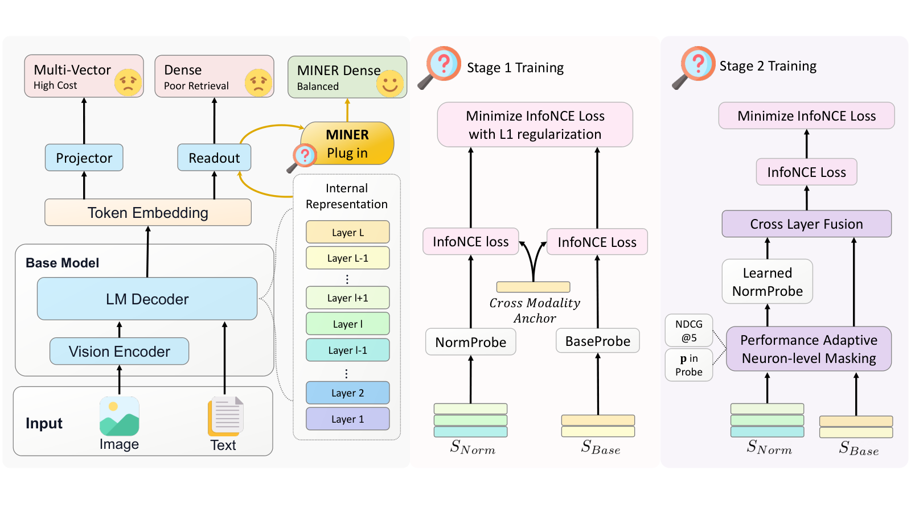
We now formally introduce the problem we aim to address. In visual document retrieval, given a query and a corpus of rendered document pages , the goal is to retrieve the most relevant document for . A single-vector retriever uses a backbone , with transformer layers as introduced in Section 3, to encode the query and document into single embeddings and , and ranks documents by the inner product . In standard single-vector retrievers, and are taken from the final-layer readout of . In contrast, we propose MINER (Mining Multi-Modal Internal RepreseNtation for Efficient Retrieval), a lightweight plug-in module that constructs and by mining retrieval-relevant signals from multiple internal layers of , guided by the criterion derived in Section 3. Figure 2 illustrates the overall MINER pipeline. MINER consists of two stages: Retrieval-Aligned Layer Probing and Adaptive Sparse Multi-Layer Fusion. MINER is agnostic to the readout mechanism of (EOS-token or pooling) and does not modify , thereby preserving the storage and serving advantages of single-vector retrieval.
4.1 Retrieval-Aligned Layer Probing
Stage attaches a lightweight probe to each layer in identified in Section 3, with the parameterization of each probe determined by the layer’s alignment regime, and trains all probes with a shared cross-modal siamese objective. Recall from Section 3 the layerwise readout of input at layer . For each paired text–vision sample in our training set , we use the modality-explicit notation and for the layer- readouts of the text and vision inputs, with the final-layer readouts and serving as the text and vision anchors. These are the cross-modal anchors from Section 3, now written in modality-explicit form.
Probe parameterization.
Following the alignment-ratio analysis in Section 3, we partition into the last three layers, , which are already directly aligned with the final retrieval space, and the remaining earlier layers, , which are structurally similar but expressed in a less aligned subspace. Each subset is equipped with its own probe parameterization, shared across the text and vision modalities since both pass through the same backbone and ultimately map into a common retrieval space. For each layer , we apply a Base Probe (BaseProbe), which learns an importance vector and applies element-wise reweighting:
| (3) |
This parameterization preserves the original coordinate system and is appropriate when the layer is already coordinate-aligned with the anchor space, so only neuron-level reweighting is needed. For each layer , we apply a Normalized Projection Probe (NormProbe), which additionally learns a projection matrix and applies element-wise reweighting followed by a row-normalized linear projection:
| (4) |
where denotes the -th row of and its -normalized counterpart. The row normalization restricts the projection to realign the less aligned subspace to the anchor space without rescaling, while retains an explicit notion of neuron-level importance for downstream masking.
Siamese training objective.
Each probe is trained to align its layer- readout with the cross-modal final-layer anchor in a siamese manner: the probed text representation should align with the vision anchor, and vice versa. For notational convenience, we write to denote if and if . The probe at layer then minimizes
| (5) |
where is the InfoNCE loss (van den Oord et al., 2018) computed over in-batch negatives and hard negatives using cosine similarity, and controls the sparsity (Tibshirani, 1996) of the importance vector .
4.2 Adaptive Sparse Multi-Layer Fusion
After probing, MINER aggregates the per-layer signals through two steps: performance-adaptive neuron-level masking, which retains only the most retrieval-relevant neurons within each layer, and cross-layer fusion, which integrates the retained signals into the final single embedding.
Performance-adaptive neuron-level masking.
Layers in differ in how much they contribute to retrieval, and stronger layers should be allowed to retain more neurons than weaker ones. To capture this, we compute a normalized layer utility score for each layer based on its standalone validation nDCG@, where and are the minimum and maximum standalone nDCG@ across all layers in . We then convert into a layer-specific Top- retention ratio , defined as , where is a floor hyperparameter that guarantees a minimum retention ratio for every layer. Stronger layers receive larger and retain more neurons. Using the importance vector learned during probing, we rank the dimensions in descending order of and construct a hard binary mask that assigns to the top dimensions and to the rest. This yields a sparse layerwise signal that preserves the most retrieval-relevant neurons while fully suppressing the others.
Cross-layer fusion.
Combining the layer partition from Stage 1 and the masking above, the processed readout of an input at layer is for or for , where are the parameters learned by NormProbe (Eq. 4). Layers in contribute directly after masking, whereas layers in are first realigned into the anchor space before contributing. The fusion head then learns a per-layer weight matrix , whose row provides dimension-wise fusion weights for layer , together with a global bias . The final dense embedding of an input is then
| (6) |
At training time, the fusion head is optimized with the same cross-modal siamese objective as the probes. Given paired samples , we minimize where and are the fused embeddings of the text and vision inputs computed via Eq. 6, and is the InfoNCE loss as in Eq. 5. At inference time, instantiates to the fused embeddings of the query and document , which are then ranked by the inner product as .
5 Experiment
We conduct comprehensive experiments to answer the following research questions: RQ1: Does MINER improve upon its dense embedding backbone, and how competitive is it with representative late-interaction retrievers? RQ2: Does MINER retain the storage and retrieval efficiency benefits as standard single-vector retrievers? RQ3: Are the major design components of MINER necessary? RQ4: Is MINER robust to key hyperparameters? We study more research questions in Appendix B. The experiment setup is introduced in Section 5.1 first, followed by the results and analysis to each of the research questions.
| Model | Size | Bio | Econ | ESG-Human | ESG-Syn | Avg. |
| Multi-Vector Retrievers | ||||||
| ColPali | 3B | |||||
| ColQwen2 | 2B | |||||
| ColQwen2.5 | 3B | |||||
| Jina(LI) | 4B | |||||
| Single-Vector Retrievers | ||||||
| SigLip | 877M | |||||
| VLM2Vec | 4B | |||||
| Jina | 4B | |||||
| Eager | 4B | |||||
| MoCa | 3B | |||||
| Ours: MINER Single-Vector Retriever | ||||||
| MINER-Jina | 4B | (+) | (+)∗ | (+) | (+)∗ | (+)∗ |
| MINER-Eager | 4B | (+)∗ | (+) | (+)∗ | (+) | (+)∗ |
| MINER-MoCa | 3B | () | (+)∗ | (+) | () | (+) |
5.1 Experiment Setup
We evaluate MINER on three visual document retrieval backbones: Jina-Embeddings-v4 (Jina) (Günther et al., 2025), Eager-Embed-v1 (Eager) (Balarini, 2025), and MoCa-3B (MoCa) (Chen et al., 2025a). Jina supports both dense retrieval and late interaction, enabling a direct comparison between dense, late-interaction, and MINER-enhanced dense embeddings under the same backbone. Eager supports dense single-vector retrieval. MoCa is a stronger bidirectional multimodal embedding backbone obtained through modality-aware continual pre-training followed by heterogeneous contrastive fine-tuning. The three backbones differ in their readout mechanisms: Eager uses an EOS-token readout, whereas Jina and MoCa use pooling-based readouts. This allows us to test whether MINER generalizes across different readout designs. For each backbone, we train the MINER plug-in module using the same training data used by the corresponding backbone. This ensures that any performance gain comes from better utilization of the model’s internal representations rather than from introducing additional data. As for the Performance-adaptive neuron-level masking introduced in 4.2 it uses the training data’s corresponding validation set. Additional implementation details are provided in Appendix C.
Following GQR (Uzan et al., 2026), we evaluate on the ViDoRe benchmark suite, including ViDoRe V (Faysse et al., 2025), V (Macé et al., 2025), and V (Loison et al., 2026), which is a comprehensive visual document retrieval benchmark suite covering diverse document types, layouts, and query styles. We follow the default evaluation protocol of each benchmark: ViDoRe V and V are evaluated using nDCG@ (Järvelin and Kekäläinen, 2002), while ViDoRe V is evaluated using nDCG@. We use ViDoRe V as the primary benchmark because ViDoRe V is increasingly saturated in recent work, while ViDoRe V is relatively new and currently includes fewer established baselines. For fair comparison, we include single-vector retrievers with fewer than B parameters that appear on the official ViDoRe leaderboard11 1 https://huggingface.co/spaces/vidore/vidore-leaderboard. Among multi-vector late-interaction retrievers, we report the strongest representative model from each ViDoRe-developed backbone family. Brief descriptions of the baseline models used in our comparisons are provided in Appendix D.
5.2 Results
Table 1 presents the results on ViDoRe V, while the ViDoRe V and V result tables are provided in Appendix E (Table 5 and Table 6). Unless otherwise stated, all MINER results use the same sparsity floor and CKA cutoff across backbones. The statistical significance is evaluated using a paired -test over per-query retrieval scores between our proposed MINER and its corresponding backbone, where we use the significance level of .
Across backbones and benchmark versions, MINER generally improves over its corresponding backbone. On ViDoRe V, MINER improves Jina for a relative gain, and improves Eager for a relative gain. MINER-MoCa also improves the average score from to , a relative gain. Although the average improvement is not significant under the default hyperparameter setting, in our sensitivity analysis (presented later in Section 5.5), varying the sparsity floor yields significant improvements for MoCa as well, indicating that different backbones or training strategies may shift the optimal hyperparameter regime. The gains are also consistent on ViDoRe V, where MINER improves all three backbones in average nDCG@. It is noticeable that MINER-Jina achieves the best average single-vector score among the compared single-vector retrievers. On ViDoRe V, even though many subsets are already saturated, MINER-Eager improves its dense backbone from to nDCG@, while MINER-Jina and MINER-MoCa remain close to their strong backbones.
Overall, these results answer RQ1 affirmatively: MINER demonstrates its effectiveness across multiple backbones and benchmarks, and in several cases narrows the gap between single-vector retrievers and representative late-interaction retrievers.
5.3 Efficiency Analysis
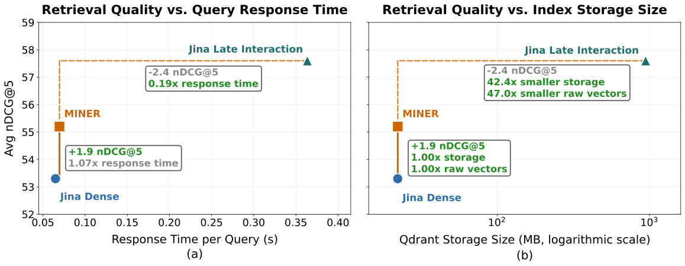
We evaluate the trade-off between retrieval performance, query-time latency, and storage cost. All efficiency measurements are conducted using Qdrant as the vector database on the full ViDoRe V benchmark. For each dataset, we index the complete document corpus and measure the average response time required to retrieve results for all queries. We report the average query response time and the average storage size. Full results are provided in Appendix F.
Figure 3 compares dense retrieval, late interaction, and MINER on Jina, which supports both retrieval modes under the same backbone. MINER produces a single embedding per query/document with the same dimensionality as the dense backbone, so its storage size and search complexity are identical to standard dense retrieval; the only overhead is computing the fused query embedding, resulting in a marginal end-to-end latency increase while improving retrieval quality by nDCG@. Compared to late interaction, MINER is faster and requires over less index storage, narrowing the quality gap with a substantially better efficiency profile. These results answer RQ2: MINER retains the storage and retrieval efficiency of single-vector dense embeddings while recovering a large portion of the dense-to-late-interaction performance gap.
5.4 Ablation Studies
| Backbone | All Neurons | All Base | All Norm | MINER |
|---|---|---|---|---|
| Jina | 54.6 | 54.9 | 50.0 | 55.2 |
| Eager | 57.1 | 57.4 | 53.1 | 58.5 |
| MoCa | 58.4 | 58.4 | 56.0 | 59.1 |
To answer RQ3, we ablate the major components of MINER on ViDoRe V. All Neurons directly trains the cross-layer weighted-sum fusion head with bias over all dimensions of the selected internal-layer readouts. All Base removes the alignment-ratio partition by using BaseProbe-derived Top- masks. All Norm removes the alignment-ratio partition in the opposite direction by applying NormProbe to all selected layers. These variants use the same frozen backbone, selected internal layers, and training data as the complete MINER, but remove specific components.
As shown in Table 2, All Neurons already improves over the corresponding single-vector baselines in Table 1 across all three backbones, confirming that internal layers carry useful retrieval signal. However, this ablated variant consistently underperforms full MINER, showing that the gains are not obtained simply by fusing all dimensions. The two probing variants further play complementary roles: All Base remains below full MINER, while All Norm performs worse, indicating that the normalized projection helps layers requiring additional alignment but distorts already aligned representations. Together, these ablations answer RQ3: both sparse masking and the design of BaseProbe and NormProbe are necessary. We also visualize the final neuron-selection in Appendix G.
5.5 Sensitivity Analysis
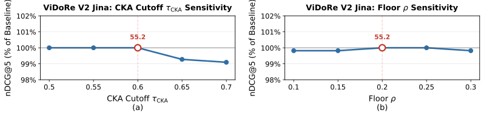
We finally evaluate whether MINER is robust to key hyperparameters. We focus on two hyperparameters: the CKA cutoff for selecting candidate layers and the sparsity floor used in dynamic Top- masking. We conduct the sensitivity analysis on MINER-Jina over ViDoRe V and report performance as a percentage of the default setting, where the default configuration uses CKA cutoff and floor .
As shown in Figure 4, MINER remains stable across a wide range of CKA cutoffs and sparsity floors , indicating that the method is not highly sensitive to the exact number of selected layers or to the precise retention floor. We observe the same trend on MINER-Eager and MINER-MoCa. Additional sensitivity analysis plots for MINER with these two are provided in Appendix H. These results answer RQ4 affirmatively: MINER is robust to the key hyperparameters.
6 Conclusion and Discussion
We presented MINER, a lightweight plug-in module for improving dense visual document retrieval by extracting retrieval-useful information from internal LM-decoder representations. Across multiple backbones and ViDoRe benchmarks, MINER consistently improves dense retrieval quality, narrows the gap to late-interaction methods, and preserves the storage and retrieval efficiency advantages of dense embeddings.
Future work can extend MINER to stronger multimodal embedding backbones, broader retrieval domains, and settings where training data access is limited. Another promising direction is to develop more automatic strategies for selecting layers, probes, and sparsity levels, further reducing the need for validation-based hyperparameter choices. We discuss the limitation in Appendix I.
References
- [1] (2026) Deep learning based visually rich document content understanding: a survey. Artificial Intelligence Review. Cited by: §1.
- [2] (2025) Scaling beyond context: a survey of multimodal retrieval-augmented generation for document understanding. ArXiv preprint abs/2510.15253. Cited by: §1.
- [3] (2024) Unifying multimodal retrieval via document screenshot embedding. In Proceedings of the 2024 Conference on Empirical Methods in Natural Language Processing, pp. 6492–6505. Cited by: §1.
- [4] (2025) ColPali: efficient document retrieval with vision language models. In International Conference on Learning Representations, Cited by: Appendix D, Appendix D, Appendix D, §1, §1, §1, §2, §5.1.
- [5] (2025) VisRAG: vision-based retrieval-augmented generation on multi-modality documents. In International Conference on Learning Representations, Cited by: §1.
- [6] (2020) ColBERT: efficient and effective passage search via contextualized late interaction over BERT. In Proceedings of the 43rd International ACM SIGIR conference on research and development in Information Retrieval, pp. 39–48. Cited by: §1, §2.
- [7] (2025) Towards storage-efficient visual document retrieval: an empirical study on reducing patch-level embeddings. In Findings of the Association for Computational Linguistics: ACL 2025, pp. 19568–19580. Cited by: §1, §2.
- [8] (2022) ColBERTv2: effective and efficient retrieval via lightweight late interaction. In Proceedings of the 2022 Conference of the North American Chapter of the Association for Computational Linguistics: Human Language Technologies, pp. 3715–3734. Cited by: §1.
- [9] (2020) Dense passage retrieval for open-domain question answering. In Proceedings of the 2020 conference on empirical methods in natural language processing (EMNLP), pp. 6769–6781. Cited by: §1, §2.
- [10] (2025) MM-Embed: universal multimodal retrieval with multimodal LLMs. In International Conference on Learning Representations, Cited by: §1, §2.
- [11] (2025) Jina-embeddings-v4: universal embeddings for multimodal multilingual retrieval. In Proceedings of the 5th Workshop on Multilingual Representation Learning (MRL 2025), pp. 531–550. Cited by: Appendix D, §1, §2, §3, §5.1.
- [12] (2022) Head2toe: utilizing intermediate representations for better transfer learning. In Proceedings of the 39th International Conference on Machine Learning, pp. 6009–6033. Cited by: §1.
- [13] (2023) Visual query tuning: towards effective usage of intermediate representations for parameter and memory efficient transfer learning. In Proceedings of the IEEE/CVF conference on computer vision and pattern recognition, pp. 7725–7735. Cited by: §1.
- [14] (2024) Parameter-efficient and memory-efficient tuning for vision transformer: a disentangled approach. In European Conference on Computer Vision, pp. 346–363. Cited by: §1.
- [15] (2024) SPIN: sparsifying and integrating internal neurons in large language models for text classification. In Findings of the Association for Computational Linguistics: ACL 2024, pp. 4666–4682. Cited by: §1, §2.
- [16] (2026) LLM safety from within: detecting harmful content with internal representations. ArXiv preprint abs/2604.18519. Cited by: §1, §2.
- [17] (2025) Perception Encoder: the best visual embeddings are not at the output of the network. In Advances in Neural Information Processing Systems, Cited by: §1, §2.
- [18] (2019) Similarity of neural network representations revisited. In Proceedings of the 36th International Conference on Machine Learning, Vol. 97. Cited by: §1, §3.
- [19] (2025) ViDoRe benchmark V2: raising the bar for visual retrieval. ArXiv preprint abs/2505.17166. Cited by: §1, §2, §5.1.
- [20] (2026) ViDoRe V3: a comprehensive evaluation of retrieval augmented generation in complex real-world scenarios. ArXiv preprint abs/2601.08620. Cited by: §1, §2, §5.1.
- [21] (2025) MMDocIR: benchmarking multimodal retrieval for long documents. In Proceedings of the 2025 Conference on Empirical Methods in Natural Language Processing, pp. 30971–31105. Cited by: §2.
- [22] (2025) VisR-Bench: an empirical study on visual retrieval-augmented generation for multilingual long document understanding. ArXiv preprint abs/2508.07493. Cited by: §2.
- [23] (2025) Reproducibility, replicability, and insights into visual document retrieval with late interaction. In Proceedings of the 48th International ACM SIGIR Conference on Research and Development in Information Retrieval, pp. 3335–3345. Cited by: §2.
- [24] (2023) Fine-grained late-interaction multi-modal retrieval for retrieval augmented visual question answering. In Advances in Neural Information Processing Systems, Cited by: §2.
- [25] (2025) Eager embed v1: multimodal dense embeddings for retrieval. Eagerworks. Cited by: Appendix D, §2, §3, §5.1.
- [26] (2025) Investigating multi-layer representations for dense passage retrieval. In Findings of the Association for Computational Linguistics: EMNLP 2025, pp. 24522–24536. Cited by: §2.
- [27] (2025) MoCa: modality-aware continual pre-training makes better bidirectional multimodal embeddings. ArXiv preprint abs/2506.23115. Cited by: Appendix D, §3, §5.1.
- [28] (2018) Representation learning with contrastive predictive coding. ArXiv preprint abs/1807.03748. Cited by: §4.1.
- [29] (1996) Regression shrinkage and selection via the lasso. Journal of the Royal Statistical Society: Series B (Methodological) 58 (1), pp. 267–288. External Links: ISSN 0035-9246 Cited by: §4.1.
- [30] (2026) Guided query refinement: multimodal hybrid retrieval with test-time optimization. In International Conference on Learning Representations, Cited by: §5.1.
- [31] (2002) Cumulated gain-based evaluation of IR techniques. ACM Transactions on Information Systems 20 (4), pp. 422–446. Cited by: §5.1.
- [32] (2019) Decoupled weight decay regularization. In International Conference on Learning Representations, Cited by: Appendix C, Appendix C.
- [33] (2023) Sigmoid loss for language image pre-training. In Proceedings of the IEEE/CVF International Conference on Computer Vision, Cited by: Appendix D.
- [34] (2025) VLM2Vec: training vision-language models for massive multimodal embedding tasks. In International Conference on Learning Representations, Cited by: Appendix D.
- [35] (2026) Qdrant: vector similarity search engine and vector database. Cited by: Table 7.
- [36] (2026) Qwen3-VL-Embedding and Qwen3-VL-Reranker: a unified framework for state-of-the-art multimodal retrieval and ranking. ArXiv preprint abs/2601.04720. Cited by: Appendix I.
Appendix A Additional Layer-wise Analysis


Appendix B Additional Research Questions
RQ5: Does feature misalignment occur across internal layers, and does the proposed alignment ratio reliably characterize it?
We evaluate whether the proposed alignment ratio captures the expected change in layerwise feature alignment after retrieval-aligned probing. Figure 7, Figure 8 and Figure 9 compare the normalized alignment ratio before and after probing on their respective backbone. Across different backbones and among the analyzed internal layers, probing consistently increases , indicating that the learned probes make intermediate representations more aligned with the final cross-modal retrieval space. useful retrieval information exists in internal layers, but it may be misaligned relative to the final embedding space. The consistent increase in after probing suggests that our NormProbe can effectively re-align some of the misaligned layers to the final embedding space.
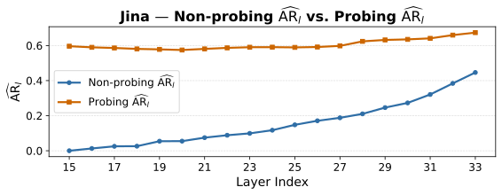
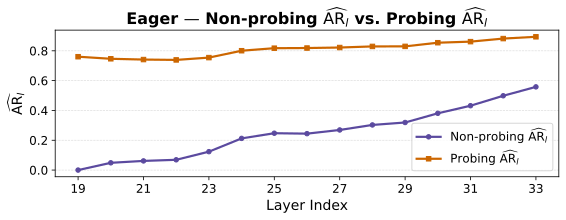
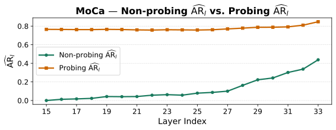
Appendix C Training Details
| Backbone | Probes | Batch | Epochs | Warm up | LR | GPUs | Time | |
|---|---|---|---|---|---|---|---|---|
| Jina | Base + WNorm | 1024 | 40 | epoch | RTX 4090 | 17h | ||
| Eager | Base + WNorm | 1024 | 40 | epoch | RTX 4090 | 14h | ||
| MoCa | Base + WNorm | 1024 | 40 | epoch | RTX 4090 | 11h |
All probing models are trained with AdamW [32] for 40 epochs using a batch size of 1024, a learning rate of , and random seed 42. We use a linear warmup for the first epoch and keep the learning rate fixed afterward. The weight decay is set to for all trainable parameters except the Hadamard scaling vector , which is instead regularized by the penalty reported in Table 3. Base and WNorm probes for each backbone are trained jointly with distributed data parallelism on two RTX 4090 GPUs, and the reported training cost corresponds to wall-clock time.
| Backbone | CKA | Batch | Epochs | Warm up | LR | Floor | GPUs | Time | ||
|---|---|---|---|---|---|---|---|---|---|---|
| Jina | – | – | epoch | RTX 4090 | 8h | |||||
| Eager | – | – | epoch | RTX 4090 | 5h | |||||
| MoCa | – | – | epoch | RTX 4090 | 6h |
After AR analysis, we partition into and for all three models as shown in Table 4. All aggregation heads are trained with AdamW [32] for 40 epochs using a batch size of 512, a learning rate of , and random seed 42. We use a linear warmup during the first epoch, after which the learning rate remains fixed. Weight decay is set to for all trainable parameters except the bias term . Each head is trained on a single RTX 4090 GPU, and training cost is reported as wall-clock time. For consistency, we train all heads for the same number of epochs, despite possible differences in convergence speed.
Appendix D Baseline Information
For completeness, we briefly describe the baseline models included in our comparisons.
SigLIP.
SigLIP is a CLIP-style vision-language model trained with a sigmoid pairwise loss rather than a softmax contrastive loss, enabling image-text representation learning without global batch-level normalization; we use the shape-optimized SoViT-400M variant pretrained on WebLI at resolution [33].
VLM2Vec.
VLM2Vec is an instruction-guided multimodal embedding model that converts a pretrained vision-language model into a fixed-dimensional embedding model through contrastive training on the MMEB benchmark; we use the full TIGER-Lab VLM2Vec checkpoint in our dense-retrieval comparison [34].
Jina-Embeddings-v4 (Jina).
Jina-Embeddings-v4 is a B-parameter multimodal and multilingual embedding model built on Qwen2.5-VL-3B-Instruct, supporting both dense single-vector retrieval and late-interaction multi-vector retrieval for text, images, and visually rich documents [11].
Eager-Embed-v1 (Eager).
Eager-Embed-v1 is a B-parameter multimodal dense embedding model finetuned from Qwen3-VL-4B-Instruct for efficient visual document retrieval, using single-vector embeddings to index documents without the max-sim scoring used by ColBERT-style multi-vector retrievers [25].
MoCa-3B (MoCa).
MoCa-3B is a bidirectional multimodal embedding model trained from Qwen2.5-VL-3B-Instruct using modality-aware continual pre-training followed by heterogeneous contrastive fine-tuning, supporting text, image, and interleaved multimodal inputs for general multimodal retrieval and visual document retrieval [27].
ColPali.
ColPali is a PaliGemma-3B-based visual document retriever that produces ColBERT-style multi-vector representations of queries and document images, using late interaction between text tokens and image patches for fine-grained visual document retrieval [4].
ColQwen2.
ColQwen2 extends Qwen2-VL-2B-Instruct into a ColBERT-style late-interaction retriever, generating multi-vector representations for both text queries and document images and scoring them through token-level MaxSim-style matching [4].
ColQwen2.5.
ColQwen2.5 is a Qwen2.5-VL-3B-Instruct-based late-interaction visual document retriever that generates ColBERT-style multi-vector representations of text queries and document images, using dynamic image resolutions with up to image patches for fine-grained document matching [4].
Appendix E Additional ViDoRe Results
| Model | ArXiv | Doc | Info | TabFQuAD | TAT | ShiftProj | Syn-AI | Syn-Energy | Syn-Gov | Syn-Health | Avg. |
|---|---|---|---|---|---|---|---|---|---|---|---|
| Multi-Vector Retrieval | |||||||||||
| ColPali-v1.3 | |||||||||||
| ColQwen2.5-v0.2 | 88.9 | 63.6 | 99.6 | ||||||||
| ColQwen2-v1.0 | 82.2 | ||||||||||
| Jina(LI) | 93.8 | 95.6 | 92.9 | 97.3 | 99.1 | 90.4 | |||||
| Single-Vector Baselines | |||||||||||
| SigLIP | |||||||||||
| VLM2Vec | |||||||||||
| Jina | |||||||||||
| Eager | |||||||||||
| MoCa | |||||||||||
| Ours: MINER Single-Vector Retrieval | |||||||||||
| MINER-Jina | |||||||||||
| MINER-Eager | |||||||||||
| MINER-MoCa | |||||||||||
| Model | CS | Energy | Fin-EN | Fin-FR | HR | Industrial | Pharma | Physics | Avg. |
|---|---|---|---|---|---|---|---|---|---|
| Multi-Vector Retrieval | |||||||||
| ColPali | |||||||||
| ColQwen2 | |||||||||
| ColQwen2.5 | 72.3 | ||||||||
| Jina(LI) | 63.5 | 59.3 | 46.1 | 59.5 | 50.4 | 63.1 | 57.5 | ||
| Dense / Single-Vector Baselines | |||||||||
| Jina | |||||||||
| Eager | |||||||||
| MoCa | |||||||||
| Ours: MINER Single-Vector Retrieval | |||||||||
| MINER-Jina | |||||||||
| MINER-Eager | |||||||||
| MINER-MoCa | |||||||||
Appendix F Full Efficiency Analysis
| Dataset | Method | QPS | Storage (MB) | NDCG@5 |
|---|---|---|---|---|
| Bio | Jina | |||
| Jina(LI) | ||||
| MINER-Jina | ||||
| Econ | Jina | |||
| Jina(LI) | ||||
| MINER-Jina | ||||
| ESG-Human | Jina | |||
| Jina(LI) | ||||
| MINER-Jina | ||||
| ESG-Syn | Jina | |||
| Jina(LI) | ||||
| MINER-Jina | ||||
| Avg. | Jina | |||
| Jina(LI) | ||||
| MINER-Jina |
Table 7 provides the per-dataset breakdown behind the aggregate efficiency results in Section 5.3. Across all ViDoRe V subsets, MINER has the same storage footprint as the dense Jina baseline because it preserves single-vector retrieval with the same final embedding dimensionality. Its QPS is consistently slightly lower than dense retrieval, reflecting the modest overhead of computing the fused representation, but the gap remains small and stable across datasets. In contrast, late interaction incurs substantially larger and more variable storage and latency costs because it indexes multiple visual token embeddings per document, whose number can vary with document content and rendered page resolution. This leads to much lower QPS and more than larger index storage on average.
The retrieval-quality gains of MINER are also consistent across datasets. Compared with the dense Jina baseline, MINER improves nDCG@ on every ViDoRe V subset, with gains of , , , and on Bio, Econ, ESG-Human, and ESG-Syn, respectively. These results show that the aggregate improvement in Figure 3 is not driven by a single dataset, but instead reflects a stable quality-efficiency trade-off across the benchmark.
Appendix G Neuron Selection Analysis
Figure 10, Figure 11, and Figure 12 show the percentage of neurons retained by the Top- masking procedure at each selected internal layer under the hyperparameter and . Across all three backbones, the neuron-selection profiles are highly similar, despite differences in model training, backbone design, and readout mechanism. In particular, the retained fraction is relatively low in earlier and middle layers, increases sharply in the late layers, and exhibits a consistent drop around layer 34 before rising again near the final layer. This shared structure suggests that the masking procedure is not simply fitting backbone-specific noise, but instead captures a recurring pattern in how useful cross-modal information is distributed across internal representations. Earlier and middle layers appear to contain useful but sparse features, requiring selective extraction, whereas the final layers are more directly aligned with the dense embedding interface and therefore retain substantially more dimensions. The consistent dip around layer 34 further indicates that high layer index alone is not sufficient: even among late layers, some representations contain more redundant information than neighboring layers.
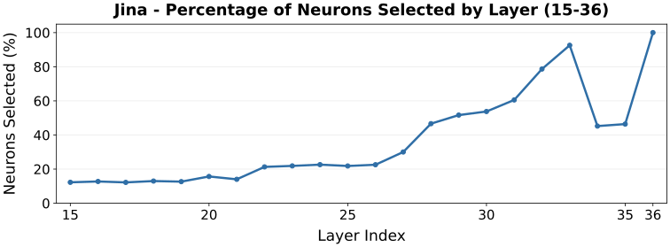
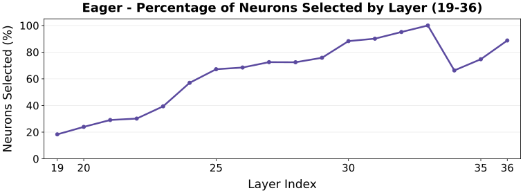
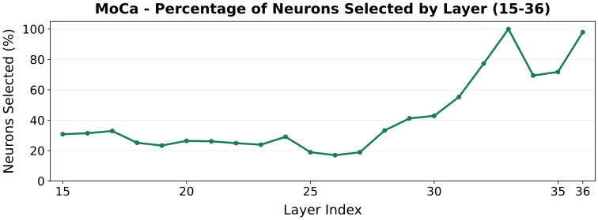
Appendix H Additional Sensitivity Analysis
Table 8 reports the candidate layer ranges selected under different CKA cutoff values for each backbone. As the cutoff increases, the selected range becomes progressively more restrictive and shifts toward later layers, reflecting the stronger alignment of late-layer representations with the final embedding space. Despite this change in the number of candidate layers, the sensitivity plots in Figures 13 and 14 show that retrieval performance remains stable across the tested cutoffs and sparsity floors. This indicates that MINER does not rely on a fragile layer-selection cutoff, but instead remains robust across a reasonable range of CKA-based candidate sets.
| Backbone | CKA cutoff | |
|---|---|---|
| Jina | – | |
| – | ||
| – | ||
| – | ||
| – | ||
| Eager | – | |
| – | ||
| – | ||
| – | ||
| – | ||
| MoCa | – | |
| – | ||
| – | ||
| – | ||
| – |
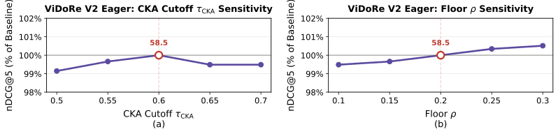
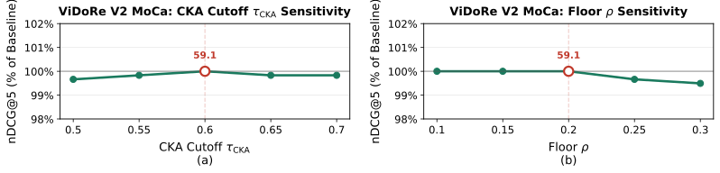
Appendix I Limitation
A limitation of our current evaluation is that MINER requires access to internal hidden states, and our controlled training protocol requires access to the training data associated with each backbone. This is intentional: to ensure that improvements come from better utilization of internal representations rather than from introducing additional supervision, we train the MINER module only on the original training data of the corresponding backbone. As a result, we do not evaluate on closed-source models where hidden states are inaccessible, or on strong open-weight models whose training data are not fully disclosed, such as Qwen/Qwen3-VL-Embedding-8B [36]. Nevertheless, this is an evaluation constraint rather than a methodological restriction: when hidden states and appropriate training data are available, MINER can be applied as a lightweight plug-in module without modifying the backbone architecture or changing the final dense retrieval interface.